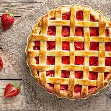

Strawberry pie

Description
North Jersey strawberry pie. Credit to OKBEE from allrecipes.com
Ingredients
- 1 (9 inch) pie crust, baked
- 1 quart fresh strawberries
- 1 cup white sugar
- 3 tablespoons cornstarch
- 3/4 cup water
- 1/2 cup heavy whipping cream
Steps
- Arrange half of strawberries in baked pastry shell. Mash remaining berries and combine with sugar in
a medium saucepan. Place saucepan over medium heat and bring to boil, stirring frequently.
- In a small bowl, whisk together cornstarch and water. Gradually stir cornstarch mixture into boiling
strawberry mixture. Reduce heat and simmer mixture until thickened, about 10 minutes, stirring constantly.
Pour mixture over berries in pastry shell.
- Chill for several hours before serving. In a small bowl, whip cream until soft peaks form. Serve each slice of
pie with a dollop of whipped cream.
Home